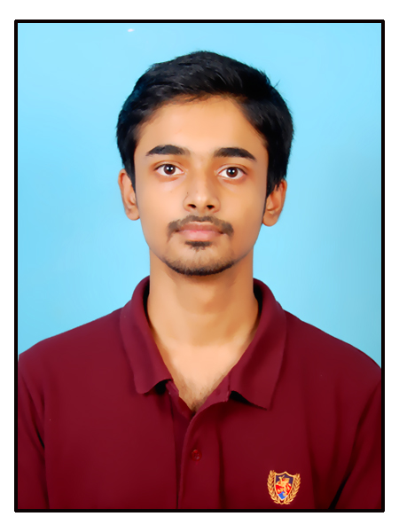

ADITYA SAI GANGARAJU

Summary
I am seeking a role in a company where I
can utilize the skills that I have learned till
date. I am a hardworking person who is
adaptable to the changes. Continuous
Learning is the principle that I follow in my
life, and I want to contribute my best to the
organization’s growth.
Education
-
B. Tech
Malla Reddy University
CSE – Data Science
2020-2024
CGPA: 8.86
-
Intermediate
Narayana Junior College
2018 - 2020
Score: 95.9%
-
SSC
Pragati Vidyanikethan
2017-2018
CGPA: 9.7
Internships
Infrabim Techno Solutions
Role: Machine Learning Intern
Duration: Oct,2022 – Jan,2023
Projects
-
Automated Saline Monitoring Using IoT
- Helpful to monitor the saline level using load cell.
- GSM module is used for communication purposes.
- It is cost efficient.
- Code written in Embedded C using Arduino IDE.
- Real-time monitoring, and multiple alerts when bottle is about to be finished.
-
Text Extraction Using OCR
- This project is helpful for extracting data from the images.
- I have used Python for coding. I have used frameworks like Pytesseract, and
pillows to extract the text from the images.
- The tabular data is also extracted from the images, and the tables can be used
further for ML models, ANN etc
-
Road Lane Detection
-
Road Lane Detection helps the driver to drive within the specified lane of the
road. It is helpful as lane deviation is one of the reasons for causing accidents.
-
OpenCV is the library in Python in which it’s helpful to draw insights from visuals
that can be either video or image.
-
The lanes are shown on the screen of the car it helps the driver to prevent lane
deviation.
Skills
- Python
- Java
- Machine Learning
- Data Analysis
- SQL
- HTML, CSS and JS
Certifications
- AWS Cloud Foundations
- Alteryx for Data Science
- Service Now Administration Fundamentals
- SQL For Data Science with Python by IBM
Achievements
- Secured 2nd position in Hackathon conducted by our university.
- Coordinated many college events
- I have been awarded with a certificate of honor for active involvement in club activities
Personal Details
Hobbies